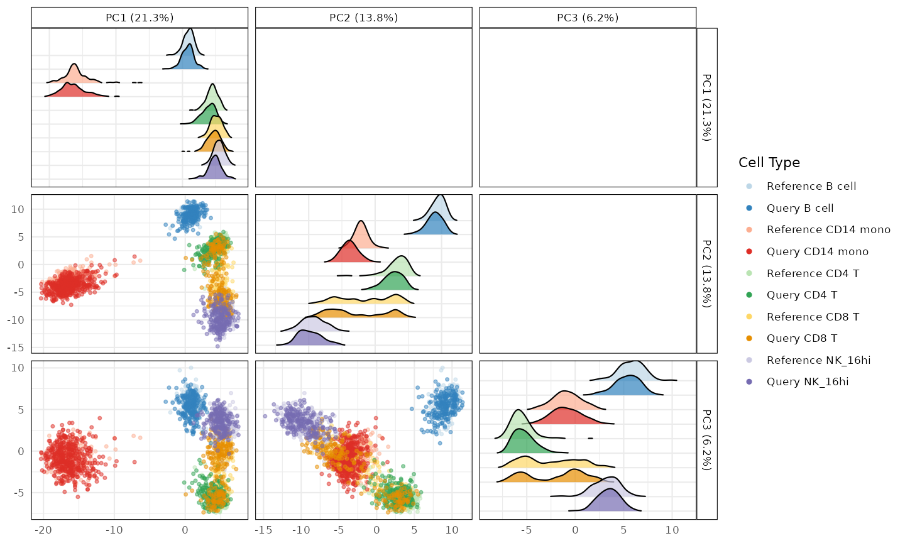
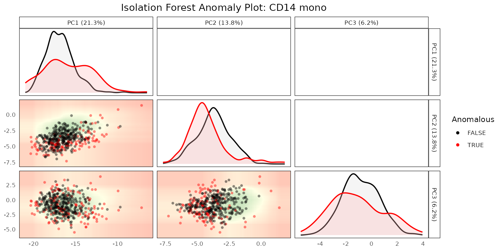
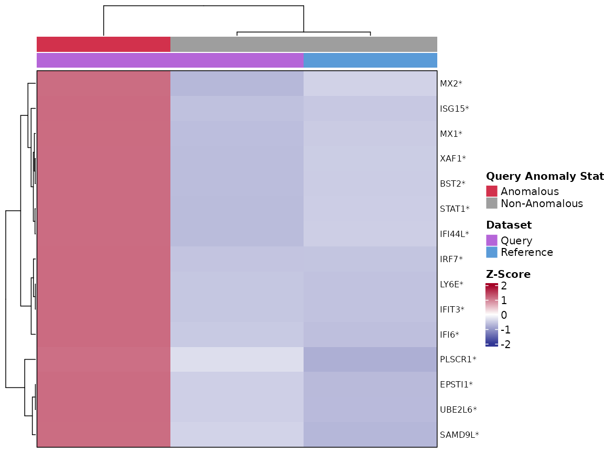
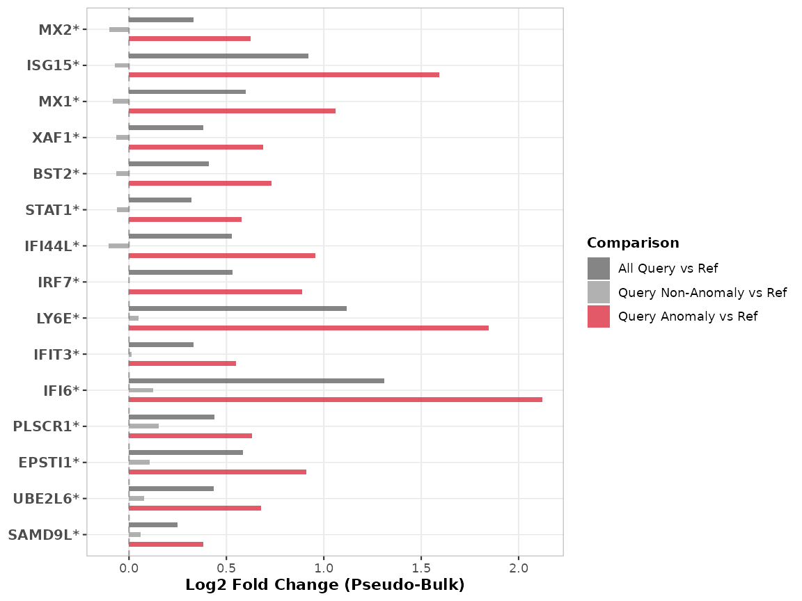

3. Case Study: A Disease-Associated Monocyte State in COVID-19
Anthony Christidis
Core for Computational Biomedicine, Harvard Medical SchoolAndrew Ghazi
Core for Computational Biomedicine, Harvard Medical SchoolSmriti Chawla
Core for Computational Biomedicine, Harvard Medical SchoolNitesh Turaga
Core for Computational Biomedicine, Harvard Medical SchoolLudwig Geistlinger
Core for Computational Biomedicine, Harvard Medical SchoolRobert Gentleman
Core for Computational Biomedicine, Harvard Medical SchoolSource:
vignettes/COVIDCaseStudy.Rmd
COVIDCaseStudy.RmdPurpose
This vignette walks through the project-detect-characterize workflow introduced in vignette 1 on a real disease case study: PBMC scRNA-seq data from healthy donors (reference) and donors with severe COVID-19 (query), from Stephenson et al. (2021). The goal is to find out whether CD14 monocytes in the severe-COVID query look like a distinct state relative to the healthy reference, and if so, what distinguishes them.
library(scDiagnostics)
library(SingleCellExperiment)
set.seed(100)The data
covid_reference_data (healthy donors) and
covid_query_data (severe COVID-19 donors) are downsampled
subsets of the Stephenson et al. (2021) PBMC atlas, restricted to 5
shared cell types and a gene panel that always includes a 25-gene
interferon-response signature (Yoshida et al.); see
?covid_reference_data for the full processing details.
data("covid_reference_data")
data("covid_query_data")
table(covid_reference_data$author_cell_type_merged)
#>
#> B cell CD14 mono CD4 T CD8 T NK_16hi
#> 180 180 180 180 180
table(covid_query_data$azimuth_celltype_l1_merged)
#>
#> B cell CD14 mono CD4 T CD8 T NK_16hi
#> 220 450 220 220 220The reference’s cell type column
(author_cell_type_merged) reflects the original authors’
annotation; the query’s (azimuth_celltype_l1_merged) comes
from Azimuth reference mapping. Both were computed independently of
scDiagnostics - we are auditing an annotation transfer that
has already happened, not producing one.
Step 1: project
plotCellTypePCA() projects the query onto the
reference’s PCA space and compares the distributions of each cell type
along the leading PCs:
shared_cell_types <- c("CD14 mono", "CD4 T", "CD8 T", "B cell", "NK_16hi")
plotCellTypePCA(
query_data = covid_query_data,
reference_data = covid_reference_data,
cell_types = shared_cell_types,
query_cell_type_col = "azimuth_celltype_l1_merged",
ref_cell_type_col = "author_cell_type_merged",
pc_subset = 1:3)
#> Picking joint bandwidth of 0.304
#> Picking joint bandwidth of 0.589
#> Picking joint bandwidth of 0.491
Step 2: detect
Focusing specifically on CD14 monocytes, detectAnomaly()
builds an Isolation Forest on the reference’s PCA projection and scores
how anomalous each query cell looks relative to it:
anomaly_output <- detectAnomaly(
reference_data = covid_reference_data,
query_data = covid_query_data,
ref_cell_type_col = "author_cell_type_merged",
query_cell_type_col = "azimuth_celltype_l1_merged",
cell_types = "CD14 mono",
pc_subset = 1:5,
n_tree = 500)
mean(anomaly_output[["CD14 mono"]]$query_anomaly)
#> [1] 0.2733333
plot(anomaly_output, cell_type = "CD14 mono", pc_subset = 1:3, data_type = "query")
In this downsampled dataset, a substantial fraction of the query’s CD14 monocytes are flagged as anomalous relative to the healthy reference. Unlike the rare/withheld-cell-type scenarios in vignette 2, this is not necessarily a small, rare subpopulation - a disease process can plausibly shift a large fraction of a cell type’s expression profile, and that is a hypothesis worth checking directly rather than assuming anomaly detection here means the same thing it did there.
Step 3: characterize
calculateGeneShifts() tests each gene in a specified
panel for a distributional shift between reference and query, optionally
comparing only the non-anomalous reference cells against the anomalous
query cells (anomaly_comparison = TRUE). We focus this on
the 25-gene Yoshida et al. interferon-response signature already
included in the gene panel of both objects:
yoshida_ifn_signature <- c(
"BST2", "CMPK2", "EIF2AK2", "EPSTI1", "HERC5", "IFI35", "IFI44L",
"IFI6", "IFIT3", "ISG15", "LY6E", "MX1", "MX2", "OAS1", "OAS2",
"PARP9", "PLSCR1", "SAMD9", "SAMD9L", "SP110", "STAT1", "TRIM22",
"UBE2L6", "XAF1", "IRF7")
gene_shifts <- calculateGeneShifts(
query_data = covid_query_data[yoshida_ifn_signature, ],
reference_data = covid_reference_data[yoshida_ifn_signature, ],
query_cell_type_col = "azimuth_celltype_l1_merged",
ref_cell_type_col = "author_cell_type_merged",
cell_types = "CD14 mono",
pc_subset = 1:5,
n_top_loadings = 25,
detect_anomalies = TRUE,
anomaly_comparison = TRUE)
#> Warning in fitTrendVar(fm, fv, ...): 'fitTrendVar' is deprecated.
#> Use 'scrapper::fitVarianceTrend' instead.
#> See help("Deprecated")
#> Warning in combineBlocks(collected, method = method, equiweight = equiweight, : 'combineBlocks' is deprecated.
#> See help("Deprecated")
#> Warning in scran::getTopHVGs(var_stats, n = n_hvgs): 'scran::getTopHVGs' is deprecated.
#> Use 'scrapper::chooseHighlyVariableGenes' instead.
#> See help("Deprecated")
#> Warning in check_numbers(x, k = k, nu = nu, nv = nv): more singular
#> values/vectors requested than available
head(gene_shifts$PC1[order(gene_shifts$PC1$p_adjusted), ], 10)
#> gene loading cell_type p_value mean_query mean_reference p_adjusted
#> 1 LY6E 0.017244450 CD14 mono 0 2.7398890 0.80911272 0
#> 2 IFI6 -0.014406456 CD14 mono 0 2.6754521 0.47198159 0
#> 3 BST2 -0.012502318 CD14 mono 0 1.6340352 0.82511624 0
#> 4 IRF7 -0.011014061 CD14 mono 0 1.3113019 0.39981541 0
#> 5 MX2 -0.010216540 CD14 mono 0 0.9759931 0.28497303 0
#> 6 MX1 -0.008912552 CD14 mono 0 1.3944989 0.24070821 0
#> 7 IFI44L -0.007559699 CD14 mono 0 1.1655427 0.13011109 0
#> 8 ISG15 -0.006431524 CD14 mono 0 2.0172213 0.29153589 0
#> 9 EPSTI1 -0.004185579 CD14 mono 0 1.1093122 0.13667800 0
#> 10 IFIT3 -0.003400604 CD14 mono 0 0.6571842 0.04993755 0
#> significant
#> 1 TRUE
#> 2 TRUE
#> 3 TRUE
#> 4 TRUE
#> 5 TRUE
#> 6 TRUE
#> 7 TRUE
#> 8 TRUE
#> 9 TRUE
#> 10 TRUEThe genes with the smallest adjusted p-values here
(e.g. IFI6, LY6E, BST2) are all
canonical interferon-stimulated genes, each with substantially higher
mean expression in the anomalous query cells than in the non-anomalous
reference cells. plot() visualizes this as a heatmap of
per-gene z-scores:
plot(gene_shifts, cell_type = "CD14 mono", pc_subset = 1:5,
plot_type = "heatmap", plot_by = "p_adjusted", n_genes = 15,
show_anomalies = TRUE, pseudo_bulk = TRUE, cluster_cols = TRUE)
or as fold-changes relative to the reference:
plot(gene_shifts, cell_type = "CD14 mono", pc_subset = 1:5,
plot_type = "barplot", plot_by = "p_adjusted", n_genes = 15,
show_anomalies = TRUE, pseudo_bulk = TRUE)
Together, these three steps give a concrete, checkable answer: yes,
CD14 monocytes in the severe-COVID query look different from the healthy
reference in PCA space, detectAnomaly() flags a large
fraction of them accordingly, and the genes distinguishing the flagged
cells are specifically interferon-response genes - consistent with a
known biological interferon-activated monocyte state in severe COVID-19,
rather than an artifact of the annotation transfer itself. The original
manuscript further shows this same interferon signature recovered
regardless of which of four independent annotation tools (Azimuth,
SingleR, CellTypist, scVI) produced the query labels; that cross-tool
comparison is not reproduced in this vignette.
R Session Info
R version 4.6.1 (2026-06-24)
Platform: x86_64-pc-linux-gnu
Running under: Ubuntu 24.04.5 LTS
Matrix products: default
BLAS: /usr/lib/x86_64-linux-gnu/openblas-pthread/libblas.so.3
LAPACK: /usr/lib/x86_64-linux-gnu/openblas-pthread/libopenblasp-r0.3.26.so; LAPACK version 3.12.0
locale:
[1] LC_CTYPE=C.UTF-8 LC_NUMERIC=C LC_TIME=C.UTF-8
[4] LC_COLLATE=C.UTF-8 LC_MONETARY=C.UTF-8 LC_MESSAGES=C.UTF-8
[7] LC_PAPER=C.UTF-8 LC_NAME=C LC_ADDRESS=C
[10] LC_TELEPHONE=C LC_MEASUREMENT=C.UTF-8 LC_IDENTIFICATION=C
time zone: UTC
tzcode source: system (glibc)
attached base packages:
[1] stats4 stats graphics grDevices utils datasets methods
[8] base
other attached packages:
[1] SingleCellExperiment_1.34.0 SummarizedExperiment_1.42.0
[3] Biobase_2.72.0 GenomicRanges_1.64.0
[5] Seqinfo_1.2.0 IRanges_2.46.0
[7] S4Vectors_0.50.3 BiocGenerics_0.58.1
[9] generics_0.1.4 MatrixGenerics_1.24.0
[11] matrixStats_1.5.0 scDiagnostics_1.7.13
[13] BiocStyle_2.40.0
loaded via a namespace (and not attached):
[1] gridExtra_2.3.1 rlang_1.3.0 magrittr_2.0.5
[4] clue_0.3-68 GetoptLong_1.1.1 scater_1.40.2
[7] otel_0.2.0 ggridges_0.5.7 compiler_4.6.1
[10] png_0.1-9 systemfonts_1.3.2 vctrs_0.7.3
[13] shape_1.4.6.1 crayon_1.5.3 pkgconfig_2.0.3
[16] fastmap_1.2.0 magick_2.9.1 XVector_0.52.0
[19] scuttle_1.22.0 labeling_0.4.3 rmarkdown_2.32
[22] ggbeeswarm_0.7.3 ragg_1.5.2 purrr_1.2.2
[25] xfun_0.61 bluster_1.22.0 cachem_1.1.0
[28] beachmat_2.28.0 jsonlite_2.0.0 DelayedArray_0.38.2
[31] BiocParallel_1.46.0 irlba_2.3.7 parallel_4.6.1
[34] cluster_2.1.8.2 R6_2.6.1 bslib_0.12.0
[37] RColorBrewer_1.1-3 limma_3.68.5 GGally_2.4.0
[40] jquerylib_0.1.4 Rcpp_1.1.2 bookdown_0.48
[43] iterators_1.0.14 knitr_1.52 Matrix_1.7-5
[46] igraph_2.3.3 tidyselect_1.2.1 abind_1.4-8
[49] yaml_2.3.12 viridis_0.6.5 doParallel_1.0.17
[52] codetools_0.2-20 lattice_0.22-9 tibble_3.3.1
[55] withr_3.0.3 S7_0.2.2 evaluate_1.0.5
[58] desc_1.4.3 ggstats_0.14.0 circlize_0.4.18
[61] pillar_1.11.1 BiocManager_1.30.27 foreach_1.5.2
[64] ggplot2_4.0.3 scales_1.4.0 RhpcBLASctl_0.23-42
[67] glue_1.8.1 metapod_1.20.0 tools_4.6.1
[70] BiocNeighbors_2.6.0 ScaledMatrix_1.20.0 locfit_1.5-9.12
[73] fs_2.1.0 scran_1.40.0 grid_4.6.1
[76] tidyr_1.3.2 colorspace_2.1-3 edgeR_4.10.5
[79] beeswarm_0.4.0 BiocSingular_1.28.0 vipor_0.4.7
[82] cli_3.6.6 rsvd_1.0.5 textshaping_1.0.5
[85] S4Arrays_1.12.0 viridisLite_0.4.3 ComplexHeatmap_2.28.0
[88] dplyr_1.2.1 gtable_0.3.6 isotree_0.6.1-5
[91] sass_0.4.10 digest_0.6.39 SparseArray_1.12.2
[94] ggrepel_0.9.8 dqrng_0.4.1 rjson_0.2.23
[97] htmlwidgets_1.6.4 farver_2.1.2 htmltools_0.5.9
[100] pkgdown_2.2.1 lifecycle_1.0.5 GlobalOptions_0.1.4
[103] statmod_1.5.2